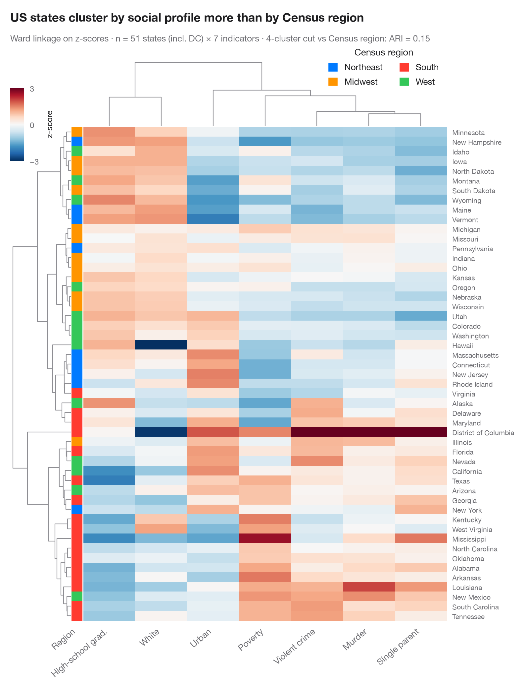

聚类热图
带行列树状图和分组色条的 Z 分数热图。

每一行是一个观测值，每一列是一个变量，每个单元格是其 z 分数（低于该变量均值为蓝色，高于为红色）。行和列按层次聚类（基于欧氏距离的 Ward 连接法）重新排序，树状图展示合并过程。左侧色条给出每一行的已知分组，因此可以一眼看出无监督的聚类树是否重新发现了这些分组——以及哪些变量驱动了这种划分。
数据为 scikit-learn 葡萄酒数据集中的 178 种葡萄酒（三个品种，13 项测量）。seaborn.clustermap 完成聚类和绘图；scipy.cluster.hierarchy 将行聚类树切分为三个聚类，用于计算与真实品种之间的调整兰德指数。
代码及图中文字均为英文。
import matplotlib.pyplot as plt
import numpy as np
import pandas as pd
import seaborn as sns
from matplotlib.patches import Patch
from scipy.cluster.hierarchy import fcluster
from sklearn.datasets import load_wine
from sklearn.metrics import adjusted_rand_score
# Data: wine measurements, z-scored per column; cultivar as row annotation
wine = load_wine(as_frame=True)
Z = (wine.data - wine.data.mean()) / wine.data.std()
Z.columns = [c.replace("_", " ").capitalize().replace("Od280/od315 of diluted wines", "OD280/OD315")
for c in Z.columns]
names = np.array(["Barolo", "Grignolino", "Barbera"])
palette = dict(zip(names, ["#007AFF", "#FF9500", "#34C759"]))
cultivar = pd.Series(names[wine.target], name="Cultivar")
with plt.rc_context({"figure.constrained_layout.use": False}):
g = sns.clustermap(Z, method="ward", metric="euclidean", cmap="RdBu_r", center=0,
vmin=-3, vmax=3, row_colors=cultivar.map(palette), yticklabels=False,
figsize=(8.5, 8), dendrogram_ratio=(0.14, 0.12), colors_ratio=0.025,
cbar_pos=(0.02, 0.83, 0.025, 0.11),
cbar_kws=dict(label="z-score", ticks=[-3, 0, 3]),
tree_kws=dict(colors="#8E8E93", linewidths=0.8))
# How well does the row tree, cut into three clusters, recover the cultivars?
ari = adjusted_rand_score(wine.target, fcluster(g.dendrogram_row.linkage, 3, "maxclust"))
g.ax_heatmap.set_xticklabels(g.ax_heatmap.get_xticklabels(), rotation=40, ha="right", fontsize=9.5)
g.ax_heatmap.set(xlabel="", ylabel="")
g.ax_heatmap.tick_params(axis="x", length=0)
g.ax_row_colors.set_xticklabels(["Cultivar"], rotation=40, ha="right", fontsize=9.5)
g.ax_row_colors.tick_params(axis="x", length=0)
g.ax_cbar.tick_params(labelsize=8.5)
g.ax_cbar.yaxis.label.set_size(9)
g.ax_col_dendrogram.legend(handles=[Patch(color=c, label=n) for n, c in palette.items()],
loc="upper left", bbox_to_anchor=(1.0, 1.05), fontsize=9.5,
title="Cultivar", frameon=False, handlelength=1, handleheight=1)
g.figure.text(0.02, 1.04, "Hierarchical clustering largely rediscovers the wine cultivars",
fontsize=13, fontweight="semibold", color="#1D1D1F")
g.figure.text(0.02, 1.01, f"Ward linkage on z-scores · n = {len(Z)} wines × {Z.shape[1]} "
f"variables · 3-cluster cut vs cultivar: ARI = {ari:.2f}",
fontsize=9.5, color="#6E6E73")
plt.show()
图表使用了可选的 Statlas 样式：添加 plt.style.use("statlas.mplstyle") 即可完全还原其外观。
如何引用
Statlas 由 Thierry Warin 创建并维护。如果它对你的工作有所帮助，敬请引用。
Warin, T. (2026). Clustered heatmap. In Statlas: The Python Gallery of Statistical Graphics. https://warint.github.io/statlas/multivariate/clustered-heatmap/
@misc{warin2026statlas,
author = {Warin, Thierry},
title = {Statlas: The Python Gallery of Statistical Graphics},
year = {2026},
howpublished = {\url{https://warint.github.io/statlas/}},
note = {Source code: https://github.com/warint/statlas}
}